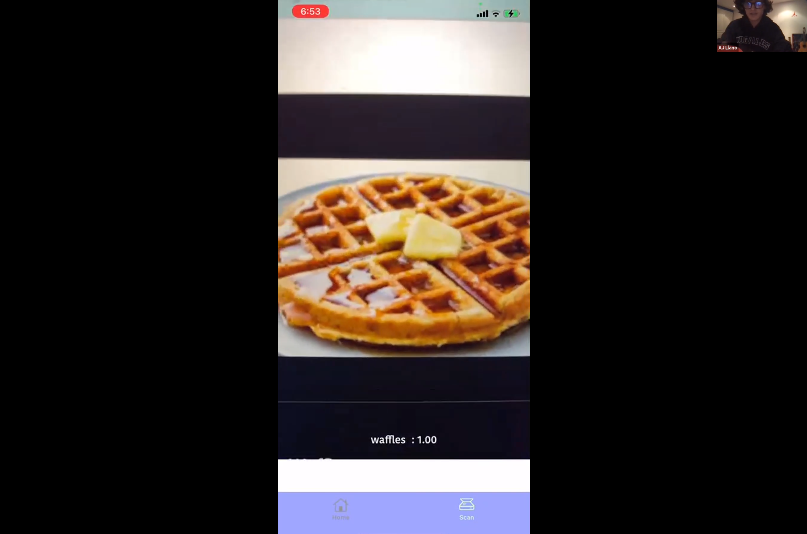
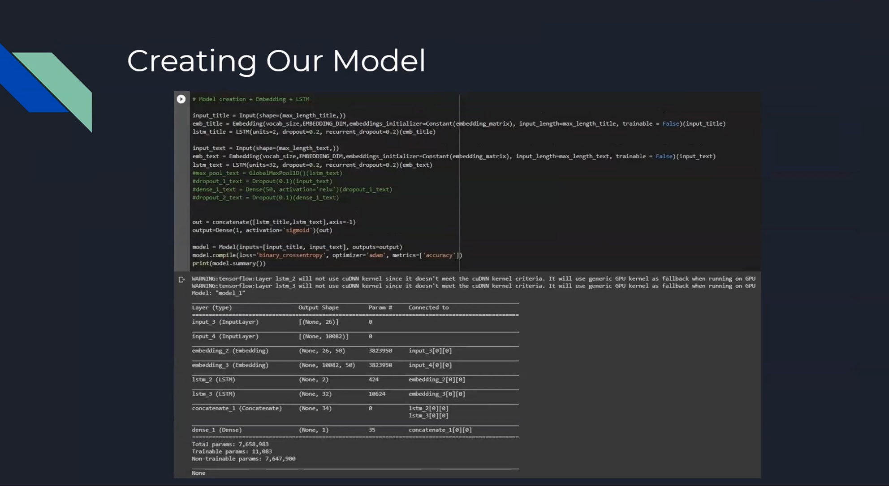

Coding Bootcamp Spring 2021
Our 2021 spring coding bootcamp was a 2 month course in which we taught our students the fundamentals of python and how to use python to develo artificial intelligence with real world applications. Additionally, our bootcamp students were able to learn from AI experts through our guest speaker series that include speakers from Google, Stanford, and the Massachussets Institute of Technology.
Student Projects
As a part of our bootcamp, each of our students created their own artificial intelligence project with real world applications. The Innovacol team guided students through every step of the process, and are so proud of all of our students of their final project outcomes!
Image Recognition and Augmented Reality for Food Classification
by Antonio Llano
I developed a Keras CNN image recognition model to classify 8 classes of food and ultimately export the model to an interactive iOS app in order to test the model in real time and combine it with some augmented reality features. For this I extracted a .hsf5 file from Kaggle that comprises a dataset of over 200k images for 101 classes of food. I incorporated such data to a model inspired by vggnet (albeit smaller). I used 3 convolutional 2d layers; I didn’t use convolutional 3d layers as they are not supported by coremltools–– which I needed for the conversion of my keras model to a coreml model. I achieved a relatively good validation accuracy of 80% [considering my dataset was miscellaneous]. I later incorporated this to an iOS app that makes use of the Vision library to update the model in real time. My app was hosted on firebase servers for a simple auth, nonetheless, I made use of local data persistence to maintain the user’s scan data. The user could scan one of the eight products, and when the model’s confidence exceeded 95%, a 3d Augmented reality node displaying the prediction popped on the screen. This scan was then saved into the database and rendered in the home section of my app.
Identifying Fake News with Machine Learning
by Juan Camilo Diez and Camilo Becerra
Juan Camilo Diez and I, Camilo Becerra, worked on a machine learning model regarding fake news and its detection. We created a model that has the ability to identify if a news article is real or fake based on its title and its text. This model utilizes different types of machine learning resources, such as recurrent neural networks (specifically LSTM) and word embedding to be able to identify news as either real or fake. This is a very useful model because fake news is one of the fastest-spreading pandemics of our time, but we remain ignorant of its existence. In Latin America, 70% of the population does not know how to detect if news is real or fake. And in Colombia, 14% of users have not even heard what fake news is, while 73% are not really sure about its definition. These are just a few statistics found by a study done by Iceberg Digital in October 2020, that prove how useful a fake news detector is if we are planning on stopping this spread. Therefore, this model can prove to be very valuable in today’s day and age, and it can help solve problems that affect us every day.
Stock prediction of Apple
by Mateo Henandez, Angelo Velosa, and Cristian Velosa

Our project tries to predict a company's stock based on the days previously taken of its
behavior. The company we chose is Apple (APPL). We think it is very useful since its helps to
see if it is viable or not to invest in an Apple stock. It is easier to understand the observation
from a table which contains the train, the valid and generates the prediction we need; with
information since 2013 to 2021 historical prices data using as a reference the close prices for
the last two months.
First of all we took the daily historical data information from Yahoo Finance, and download it
in a CSV exel file to later on submit it in to the google colab notebook.
For this machine learning project we decide to use LSTM because it is the most viable neural
network to predict the future stock data. The data we collect from yahoo give us the open
price, high price, low price, and close price for the stock for day, for our predictions we only
take into account the close data.
The training data correspond to the 80% of the collected data and the validation data it’s the
remaining 20 % of the actual data.
Character Recognition using Machine Learning
by Simón Sales and Gabriel Bickenbach

Our machine learning program is able to recognize a handwritten character and determine which one is it on a computer. It is a basic type of handwriting recognition software, but it is only able to recognize characters.
Musical Genre Classification
by Paula Nieto, Margarita Carranza, and Juan Gonzalez

For our machine learning model, we considered many different possible models, but we decided on a model that could sort different music genres. Specifically 10: blues, classical, rock, pop, country, disco, hip hop, jazz, metal and reggae. We started out by looking for possible data sets and discovered a useful website which led us step by step through the process of building our model. It went in depth on different measurements/useful graphs for sounds and music and explained how we could use it for our model. It also included some example code which we used but also modified to improve the accuracy rate in both the training and test data. The hyper parameters we used were the learning rate, the number of epochs, and the batch size. We also used regularización to avoid overfitting with the training data.